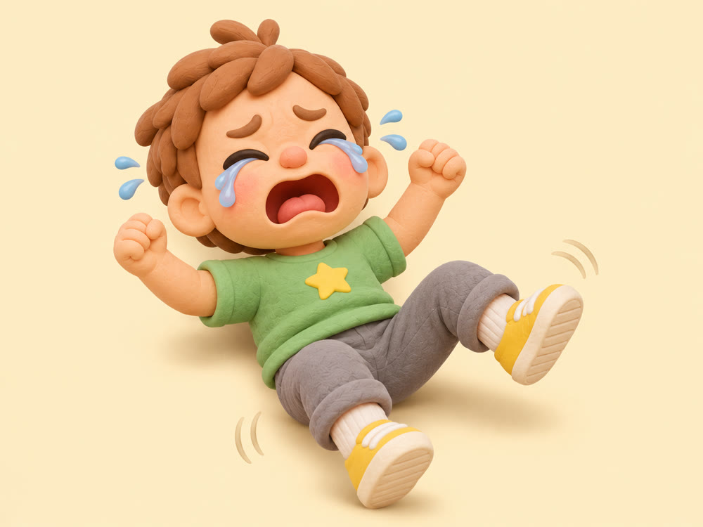
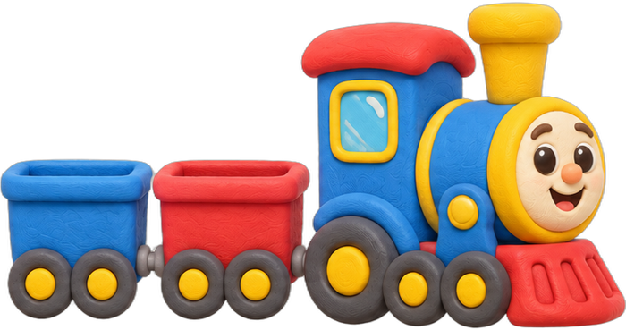

Помогаю ребёнку заговорить, наладить поведение и освоить горшок
Находим причину трудности, составляем понятный план и сопровождаем семью, пока навык не закрепится. Работаю онлайн, из любой страны.
Узнаёте свою ситуацию?
Нажмите на карточку, чтобы увидеть, как мы работаем с этой ситуацией.

Трудности с туалетным навыком
- В 3-8+ лет всё ещё в подгузнике
- Какает стоя, прячется или терпит
- Боится горшка или унитаза

Ребёнок не говорит или говорит мало
- Нет слов к двум годам, только звуки и жесты
- Тянет за руку вместо просьбы
- Речь есть, но её не понимают

Истерики, отказы, агрессия
- Кричит, падает на пол, бросает вещи
- Не слушается и не переключается
- Привычные способы не помогают
С какими особенностями развития я работаю
Родители часто приходят с формулировкой из заключения. Я работаю над конкретными навыками: речью, коммуникацией, поведением и самостоятельностью, в рамках своей компетенции. Диагноз ставит врач.
Речь и коммуникация
- Задержка речевого развития
- Общее недоразвитие речи (ОНР)
- Алалия
- Ограниченный словарный запас
- Трудности фразовой речи
- Трудности понимания обращённой речи
Нейроразвитие
- Расстройства аутистического спектра (РАС)
- СДВГ
- Трудности социального взаимодействия
- Трудности с повседневными навыками
- Задержка формирования самостоятельности
Обучение и навыки
- Дислексия и дисграфия
- Трудности освоения чтения и письма
- Трудности формирования учебных и бытовых навыков
Работа с семьёй: шесть этапов
От первой оценки до закрепления результата. На каждом этапе понятно, что делаем и зачем.
- 1ОценкаРазбираем ситуацию: что происходит до, во время и после трудного момента.
- 2ПланФормулируем цели и порядок шагов. Понятно, что делать дома.
- 3КонсультацииОбъясняю приёмы и отвечаю на вопросы, чтобы вы действовали уверенно.
- 4СопровождениеРаботаем по плану, я рядом на каждом этапе.
- 5Обратная связьДаю обратную связь и показываю, что получается.
- 6КорректировкаМеняю программу по динамике и закрепляем результат.
Чем отличаются форматы
Можно начать с консультации и перейти к сопровождению. Стоимость сообщаю в личной переписке.
Консультация
Чтобы разобраться в ситуации и получить план.
- Разбор запроса и истории ребёнка
- Определение причины и целей
- План шагов для дома
Индивидуальное сопровождение
Когда нужен результат, а не только план.
- Работа по плану на каждом этапе
- Обратная связь по ходу работы
- Корректировка программы по динамике
Групповая программа
Занятия вместе с другими родителями.
- Групповая работа по туалетному навыку
- Поддержка и обсуждение в группе
Приоритетные направления: туалетный навык, запуск речи, работа с поведением. Из других стран возможна запись и оплата, способ обсуждаем индивидуально.
Самостоятельные материалы для родителей
Если хотите работать самостоятельно, начните с курса или руководства. Это системы, по которым Александра работает с семьями, и по курсу уже прошли более 100 семей. Основа: принципы ABA.

Дефекация сидя
5 видеолекций и практические материалы: пошаговая система формирования туалетного навыка. От 2,5 лет.

Руководство по туалетному навыку
Работа с устойчивыми привычками, когда процесс застрял.

Руководство по работе с поведением
Пошаговый алгоритм на принципах ABA.
Психолог и поведенческий аналитик
Помогаю родителям понять причины трудностей ребёнка и дать ему навыки, которых не хватает: говорить, просить, ждать, ходить на горшок. Работаю по принципам прикладного анализа поведения.
Работаю вместе с командой специалистов, в том числе с нейропсихологом: каждый отвечает за своё направление, а план у семьи один.
Что происходит на консультации по речи
Начинаем с диагностики речи и навыков общения, чтобы план опирался на то, что ребёнок уже умеет.
Упражнения для развития речи
Девять занятий с кадрами-историями, настоящими звуками животных, слогами и вопросами для ребёнка. Подходят для занятий со специалистом и для самостоятельной работы. Подсказки для родителя внутри.
Открыть все упражнения


Что пишут семьи
Туалетный тренинг онлайн: от запроса до результата
Видео из историй. Публикуется с согласия родителей, лицо ребёнка скрыто. Работа шла онлайн через маму.
Решила вам написать. У нас такая ситуация необычная. Сын какал только лёжа, и мы надевали памперс. Запоры у него были с двух, и мы принимаем Форлакс. И две недели мы делали всё по вашей книге, и вчера перед сном он впервые покакал на горшок!!! Ну мы с мужем прибываем в шоке)))
Ребёнок стал сам ночью просыпаться и писать в горшок. Какает тоже почти всегда в горшок уже неделю, дома и на даче всё удаётся.
Тексты из личных сообщений родителей, опубликованы с согласия.
Что обычно спрашивают
Чем консультация отличается от сопровождения?
Консультация нужна, чтобы разобраться в ситуации, определить цели и получить план. Сопровождение подходит, когда нужна работа по плану, обратная связь и корректировка программы до результата.
С чего лучше начать: курс, руководство или консультация?
Если готовы работать самостоятельно, подойдут курс или руководство. Если вы считаете, что самостоятельно справиться будет трудно, или хотите, чтобы специалист был рядом и давал обратную связь, лучше начать с консультации или сопровождения.
Нужен ли диагноз для обращения?
Нет. Достаточно трудности: ребёнок не говорит, кричит, отказывается или боится горшка. С заключениями тоже работаю, в рамках своей компетенции.
Нужен ли ребёнок на консультации?
Чаще всего основная работа идёт с родителями: они рядом с ребёнком каждый день. Формат подбираем под запрос.
Можно ли записаться из другой страны?
Да, работаю онлайн. Способ оплаты и валюта обсуждаются индивидуально.
Запись за три шага
Выберите мессенджер, в который вам удобнее написать.
Другие способы связи и шаблон сообщения:
Выберите мессенджер, который вам удобнее. VK и MAX открываются без VPN. Запись и оплата пока проходят через личные сообщения. Если вы за границей, способ оплаты (например, PayPal) и валюта обсуждаются индивидуально.